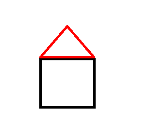

When the method finishes, control returns to the next statement after the call.
Methods with Arguments
Arguments are copied into parameters
Method parameters and arguments
yertle.forward(200);yertle.turn(30);
200 and 30 are arguments in the calls. The method’s parameter variables receive copies of those values.
Vocabulary Check
Match the term to the code
yertle.forward(200);
object receiver: yertle
method name: forward
argument: 200
full method call: yertle.forward(200)
This vocabulary is also used when reading constructor calls.
Overloaded Instance Methods
Same method name, different parameter lists
Turtle UML method list
Examples:
yertle.forward();yertle.forward(100);
Java chooses the method whose parameter list matches the arguments.
Code Task
Draw with turtle methods
Start from a simple turtle program and add movement.
importjava.awt.*;publicclass TurtleTestMethods1 {publicstaticvoidmain(String[] args){ World world =newWorld(400,400); Turtle yertle =newTurtle(world); yertle.setColor(Color.blue); yertle.forward(100); yertle.turn(90); yertle.forward(100); world.show(true);}}
Classroom goal: draw a square and a triangle using at least three colors.
Mixed-Up Code
Reorder the house drawing

House target
Place these actions in an order that draws the square walls first and then the red roof.
create World and Turtle
set the turtle color for the wall
draw four equal sides with four turns
set the turtle color to red
turn and draw the two roof sides
show the world
Void and Non-Void Methods
Some methods perform actions, some return values
yertle.forward(100);// void: moves the turtleint x = yertle.getXPos();// returns an intint y = yertle.getYPos();// returns an int
A void method does not return a value.
A non-void method returns a value that can be stored, printed, or used in an expression.
Getter methods often return object state.
Getter Trace
Track state before and after movement
World world =newWorld(300,300);Turtle yertle =newTurtle(world);System.out.println(yertle.getXPos());System.out.println(yertle.getYPos());yertle.forward(50);yertle.turn(90);System.out.println(yertle.getXPos());System.out.println(yertle.getYPos());
Trace the values printed before and after the movement.
Debugging Task
Store and print a returned value
Broken code:
int area;yertle.getWidth()* getHeight;System.out.println("Yertle's area is: ");
Corrected code:
int area = yertle.getWidth()* yertle.getHeight();System.out.println("Yertle's area is: "+ area);
If width is 15 and height is 18, the area is 270.
Trace Check
Method return values in expressions
Circle c =newCircle(10);System.out.println(c.getArea());
If getArea() returns 3.14159 * radius * radius, the output is approximately 314.159.
Student task: identify which value is the object state and which value is returned by the method.
Trace Check
Object state can change before a getter call
Rectangle r =newRectangle(10,15);r.resize(5);System.out.println(r.getArea());
If resize(5) increases the width by 5, the new dimensions are 15 by 15.
The printed area is 225.
Trace Check
Follow nested method calls
publicstaticintsquare(int x){return x * x;}publicstaticintdivide(int a,int b){return a / b;}System.out.println(square(2)+divide(6,2));
Answer: 4 + 3, so the output is 7.
Code Task
Distance from one turtle to another point
Use the turtle getter methods.
World world =newWorld(400,400);Turtle yertle =newTurtle(world);System.out.println(yertle.getXPos());System.out.println(yertle.getYPos());System.out.println(yertle.getDistance(0,0));
Extend the program:
create another turtle
move at least one turtle
print the distance between the two turtles
Groupwork
Turtle House
Use instance methods to draw a house.
Required method types:
movement: forward, turn, moveTo
pen control: penUp, penDown
style: setColor
getter or distance check: one method that returns a value
The drawing should use different colors for at least two house parts.
Classroom Check
A complete answer should…
call instance methods with object.methodName(arguments)
distinguish class method calls from instance method calls
identify object receiver, method name, and arguments
avoid method calls on null
explain overloaded methods by parameter list
use returned values from non-void methods correctly